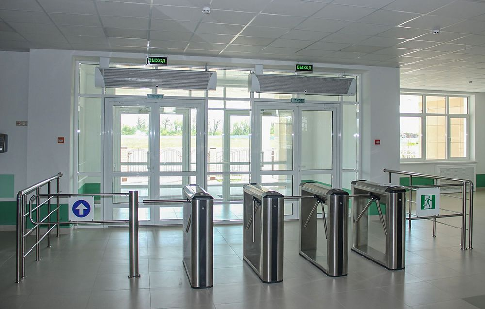

Кампусный проект
В настоящий момент времени в свою активную фазу вступает один из многих и важных проектов университета – Кампусный проект. Основной целью данного проекта является трансформация инфраструктуры университета в иной, современный вид, способный отвечать на современные вызовы как с точки зрения безопасности, так и с точки зрения комфорта пребывания на территории университета.На первом этапе, реализация которого запланирована на текущий календарный год, учебные корпуса Университета будут оборудованы новыми современными турникетами и видеокамерами. Новое оборудование сделает процесс прохождения к месту учебы или работы быстрым и удобным, поскольку в качестве личного идентификатора будет использоваться бесконтактная цифровая сервисная карта (кампусная карта), которая будет выдаваться каждому сотруднику и обучающемуся. Для удобства обладателей такой карты уже на первом этапе будут организованы сервисы, позволяющие получить скидку на услуги плавательных бассейнов и столовых университета, карту можно будет использовать в качестве читательского билета в библиотеке. В дальнейшем перечень сервисов будет расширяться.

Кампусный проект играет важную роль в деле реализации программы развития Университета в части инфраструктуры и, как и большинство инфраструктурных проектов, потребует немалых материальных затрат. Для решения вопросов, связанных с финансированием проекта, были приглашены внешние партнеры. В результате проведения публичного конкурса нашими партнерами стали «Сбербанк» (ПАО) и «Азиатско-тихоокеанский банк» (ПАО), профинансировавшие проект на условиях благотворительности и взявшие на себя обязательства по обеспечению цифровыми сервисными картами сотрудников и студентов Университета.
По вашему желанию, цифровая сервисная карта сможет совмещать функции банковской карты. В этом случае на нее будет производиться перечисление заработной платы и стипендии. Для изготовления карты такого формата банкам-партнерам с вашего письменного согласия будут переданы личные данные (паспортные данные, адрес места жительства, сведения о дате и месте рождения, контактный телефон при наличии).